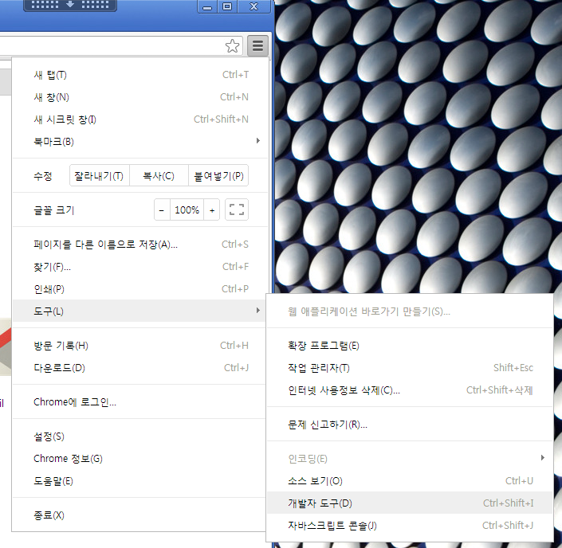

Javascript 개발자 도구
RichUI를 사용하기 전에 우선 javascript를 편리하게 개발할 수 있는 환경을 구성해야 합니다.
일반적으로 javascript는 오류가 발생해도 어디서 발생했는지 찾기 힘들고 어렵다고들 말합니다. 심지어 불안정하다는 의견도 있는데, "이젠 그런 오해는 모두 버려!!" 라고 얘기 할 수 있는 세상이 왔습니다. 세상을 Internet Explorer가 장악했던 시대, 오직 Internet Explorer에만 의존했던 시대는 지나 갔습니다. 훌륭한 개발자 도구를 탑재한 좋은 브라우저들이 나타났으니 말입니다.
Google Chrome 및 개발자도구
서두에 말씀드린 브라우저들 중 지금 소개할 브라우저는 Google의 Chrome 브라우저(이하 Chrome) 입니다.
이 튜토리얼을 작성중인 PC에 설치된 Chrom의 버전이 26.0.1410 이네요. 실로 엄청난 업데이트 속도입니다.
그보다 더 오랜 역사를 가진 FireFox는 19.0.2이네요. IE는 이제야 10 입니다.
Chrome이 최고의 브라우저라 말할 수는 없지만 개발 관련된 고민을 많이한 브라우저인건 버전 숫자에서 확인할 수 있습니다.
그러한 노력이 보이는 또하나의 이유는 크롬의 개발자 도구 입니다. 예전엔 FireFox의 FireBug를 많이 사용하였으나 지금은 자연스레 Chrome의 개발자 도구가 많이 사용되고 있습니다.
- Google Chrome의 개발자 도구
- FireFox의 Firebug 개발자 도구
Chrome, Firebug, 기타 다른 개발자도구 모두 현재(2013년 7월 기준) 대부분 평준화되어 동일한 기능들을 갖추고 있습니다. 모두 나름대로의 버그도 있고 장단점도 있습니다.
개발자로써 지금 자신이 사용하는 도구가 최선의 도구인지 의심이 드는 순간이라면 Chrome으로 바꿔보시면 어떨까요?
그럼 Chrome을 설치해보도록 하겠습니다.
Google Chrome 설치
Chrome은 Google사이트를 통해 다운로드 받을 수 있습니다.
우측 상단의 "Chrome 다운로드" 버튼을 클릭하면 Chrome다운로드 화면으로 이동합니다.
상단의 "Chrome 다운로드" 버튼을 한번 더 클릭하면 Chrome 사용약관 및 설치 설정화면을 볼 수 있습니다.
이제 약관을 차근 차근 읽어 보고 "동의 및 설치" 버튼을 눌러주세요. 자동 설치 프로그램이 시작됩니다.
"Run" 버튼을 클릭하시면 인터넷에 연결하여 Chrome설치 파일을 다운로드 한 후 설치됩니다. 이 과정은 모두 자동으로 이루어집니다.
다운로드 중의 화면입니다.
설치가 종료되면 Chrome이 열리고 환영메세지가 보입니다.
이제 Chrome을 실행하고 개발자도구를 살펴보도록 하겠습니다.
Chrome 개발자 도구
Chrome 개발자도구의 모습입니다. 상단에 Elements, Resources, Network, Sources, Timeline, Console등 도구에서 제공하는 기능들이 배치된 탭들이 있습니다. 각 탭별로 개발에 필요한 여러가지 관련 정보들을 확인할 수 있습니다.
우선 개발자도구를 open 하는 방법부터 살펴보도록 하겠습니다.
Chrome의 개발자 도구는 키보드 F12 버튼을 누르시면 브라우저의 하단 또는 새로운 창으로 열립니다. 아래 그림과 같이 Chrome의 "메뉴 - 도구 - 개발자도구"를 선택하거나 "Ctrl + Shift + I" 키를 동시에 눌러도 열립니다.

뿐만아니라 검사하고자 하는 화면의 항목에 마우스 포인터를 놓고 마우스 오른버튼 클릭하시면 컨텍스트 메뉴가 나오는데, 메뉴중 "요소검사"를 선택해도 열립니다.
특히 이경우는 마우스 포인터로 선택했던 위치의 Element가 자동 선택됩니다. 보고자 하는 Element를 찾는 가장 빠른 방법입니다.
개발자도구 Elements 탭의 우측영역에는 현재 선택된 Element의 스타일, 속성, 크기들을 확인할 수 있는 속성창이 있습니다. 그림에 보이듯이 현재 선택된 Element의 속성들을 확인하고 필요에 따라 값을 변경해볼 수도 있습니다. 값을 변경하면 변경한 내용이 바로 적용되어 화면이 바뀝니다.
이번엔 Breakpoint를 이용하여 javascript 디버깅을 하는 모습입니다.

Sources 탭에서 Breakpoint를 지정하고자 하는 위치를 찾아 좌측의 라인번호 부분을 마우스로 클릭하면 Breakpoint가 지정됩니다.
이후에 프로세스가 진행되다가 이 위치를 만나게되면 위 그림과 같이 프로세스가 멈추게 됩니다.
혹은 자바스크립트 소스 상에 직접 "debugger;" 라고 명시하면, 코드 실행중 해당 위치에서 Breakpoint가 실행됩니다.
디버깅 실행 단축키로는 4가지를 기억하면 됩니다. F8, F10, F11, Shift + F11
- F8은 Resume 입니다. 이후에 위치한 Breakpoint를 만나거나 Breakpoint가 없다면 끝까지 진행합니다.
- F10은 Step Over 입니다. 한단계 다음으로 진행합니다. 메소드를 만나도 안으로 들어가지 않고 그냥 넘어갑니다.
- F11은 Step Into 입니다. 현재 단계의 메소드 안으로 들어가서 메소드 내부를 디버깅 할 수 있습니다.
- Shift + F11은 Step Out 입니다. 현재 단계가 속한 메소드를 벗어나 상위 메소드로 빠져 나갑니다.
Eclipse에서 Java 디버깅을 하던 때의 단축키와는 다른 키 배치라 Eclipse의 디버깅에 익숙하신 분들에게 초기 적응이 쉽지는 않습니다.
다음은 Timeline에 따른 Network 모니터링 입니다.
현재의 페이지가 읽어들인 각종 리소스들이 Timeline 순서대로 나열되어 있는것을 볼 수 있습니다. 리소스가 정상적으로 로드되었는지, 캐시를 사용했는지
어느정도의 크기를 가지며 어느정도의 시간을들여 읽었는지 등을 알 수 있는데요.
이런 정보들을 제공하는 Network 탭을 통해 http error status, 누락된 파라미터나 http header/body 정보 등을 확인하거나 느린 리소스를 확인하여 튜닝할 수 있습니다. .
마지막으로 Console 탭을 펴보도록 하겠습니다.
오류가 발생하면 제일 먼저 확인할 수 있는 Console 입니다. 오류 또는 디버깅 메시지가 출력되며 그와 함께 출력 위치도 표시됩니다.
특히 출력 위치를 마우스로 클릭하면 그 소스 위치로 자동 이동됩니다.
디버깅 메시지는 javascript 코드 상에서 "console.log()", "console.debug()" 메소드를 이용하여 출력할 수 있습니다.
여기서 주의할 점은 IE6, 7의 경우 console을 지원하지 않습니다. 즉 console.log() 함수를 사용하여 개발한 후 코드를 지우지 않고 배포하면
사용자의 IE 환경에서는 스크립트 오류가 발생합니다.
Chrome의 개발자도구의 기능들 중 가장 많이 쓰이는 몇 가지만 우선 소개했습니다. 소개하지 않은 기능들 또한 각각의 개발 요소에 필요한 정보들을 제공합니다. 추후 꼭 한번 살펴보면 개발에 큰 도움이 되겠습니다.
현재의 개발자도구들은 예전 IE 환경에서는 상상할 수도 없을 만큼의 훌륭한 디버깅 도구들을 제공합니다. 성능도 정말 훌륭한 편입니다. 이제는 더 이상 개발 환경의 편의성 때문에 javascript가 어렵다는 말은 필요 없는 환경이 되었습니다.